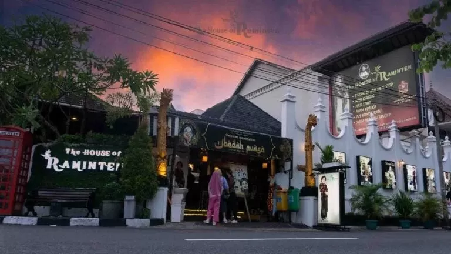

The House of Raminten
⭐⭐⭐⭐⭐

Westlake Resto
⭐⭐⭐⭐☆

Sate Ratu
⭐⭐⭐⭐⭐

Heha Sky View
⭐⭐⭐☆☆
Kesuma Restaurant
⭐⭐⭐⭐⭐
Piyama Cafe
⭐⭐⭐⭐☆
Mediterranea Restaurant by Kamil
⭐⭐⭐⭐☆
The Tree Restaurant By Amaranta Prambanan
⭐⭐⭐⭐⭐
South Shore
⭐⭐⭐⭐⭐
Abhayagiri - Venue and Dining
⭐⭐⭐⭐⭐
Lalawuh Sunda
⭐⭐⭐⭐⭐
The Manglung View & Resto
⭐⭐⭐⭐⭐